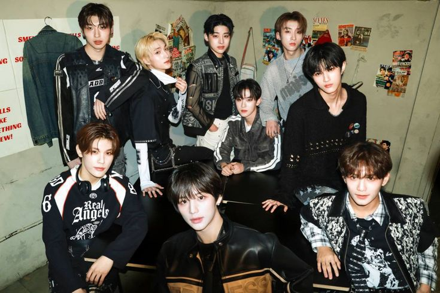
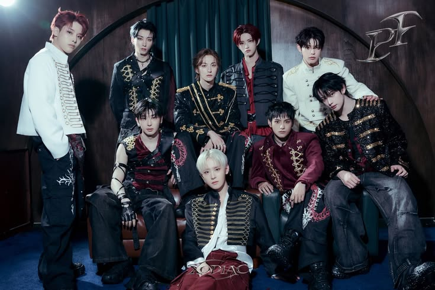
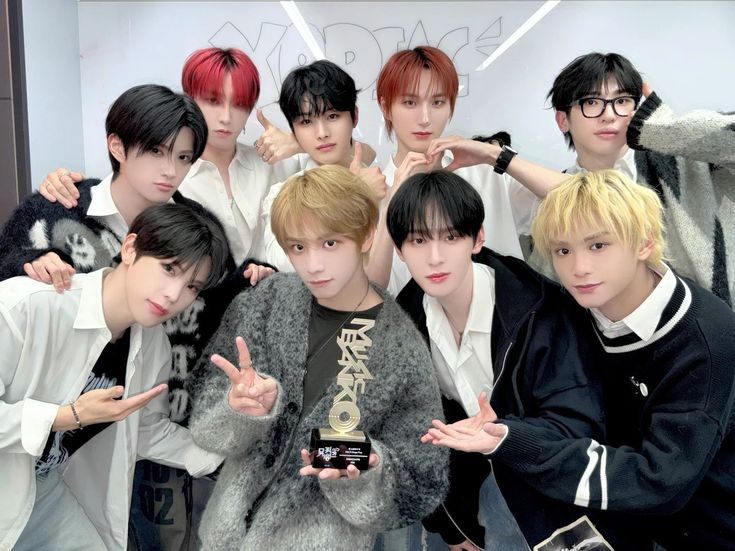

Debut XODIAC
XODIAC resmi memulai debutnya pada April 2023 dengan lagu Throw A Dice. Debut ini menjadi langkah awal perjalanan mereka dalam industri musik K-pop.
Responsive web page (halaman web responsif) adalah halaman situs web yang dirancang agar tampilannya menyesuaikan secara otomatis dengan ukuran layar, resolusi, serta perangkat yang digunakan penggunanya—baik dari komputer desktop, laptop, tablet, hingga smartphone.

XODIAC resmi memulai debutnya pada April 2023 dengan lagu Throw A Dice. Debut ini menjadi langkah awal perjalanan mereka dalam industri musik K-pop.

XODIAC menghadirkan musik K-pop dengan melodi yang menarik, koreografi energik, dan penampilan panggung yang memukau. Setiap penampilan menunjukkan kemampuan para anggotanya.

XODIAC telah merilis berbagai lagu dengan konsep dan nuansa musik yang beragam. Karya-karya tersebut menjadi bagian dari perkembangan mereka sebagai grup idola.